DESIGN EYE
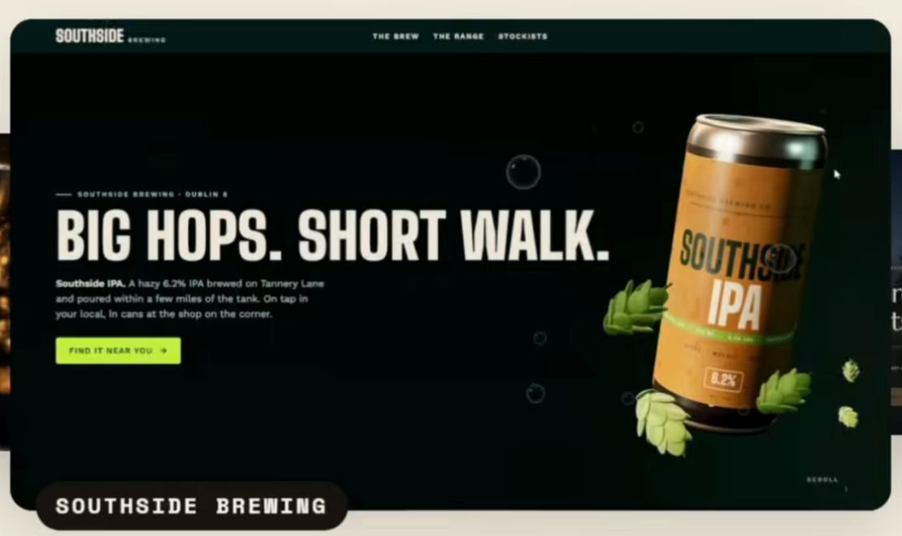
레퍼런스로 방향을 정하고, 반복과 비교로 완성도를 높인다.
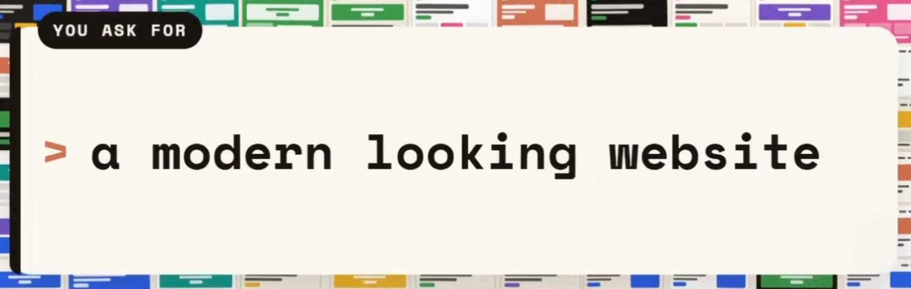
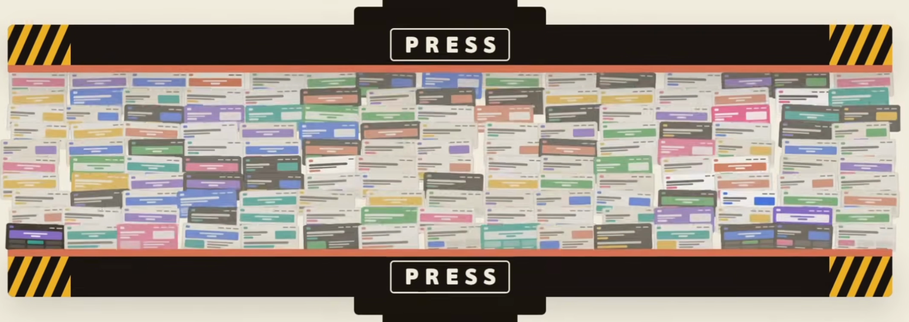
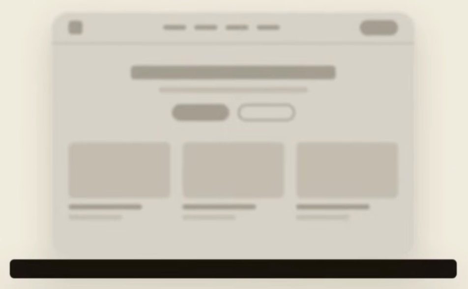
→
추상적인 요청은 익숙한 색과 구조로 수렴하기 쉽다.
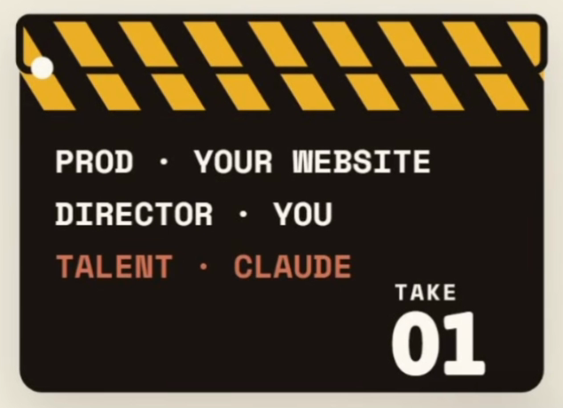
DIRECTOR
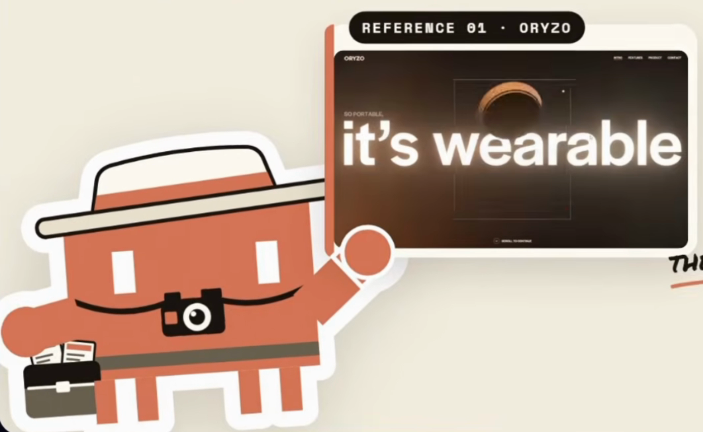
REFERENCE
사람이 레퍼런스로 방향을 정하고 Claude가 구현한다.
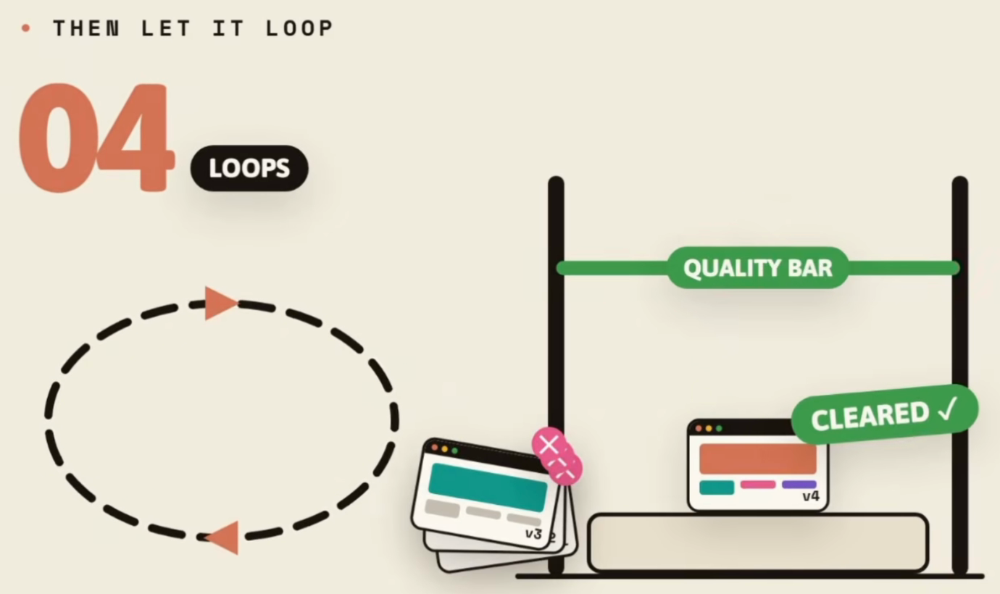
결과를 비교하며 품질 기준을 넘을 때까지 다듬는다.
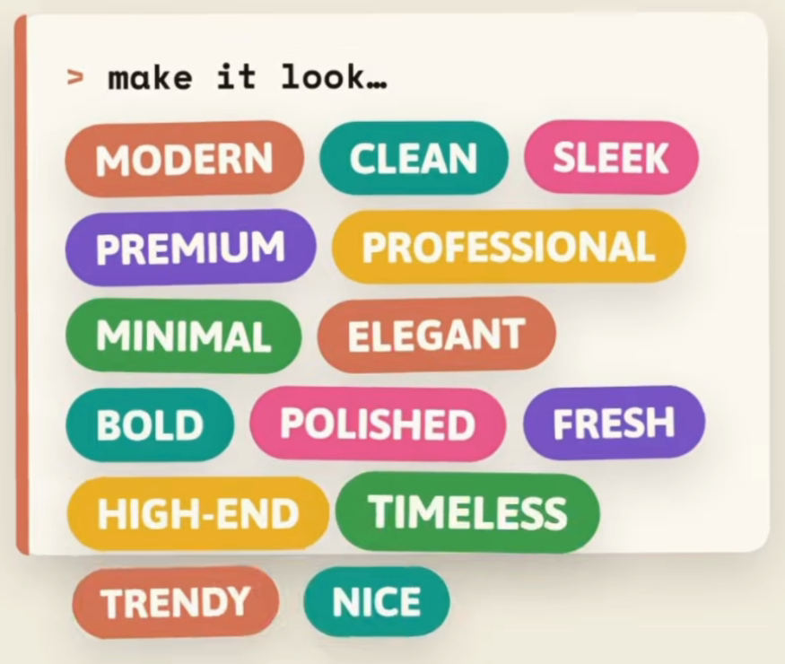
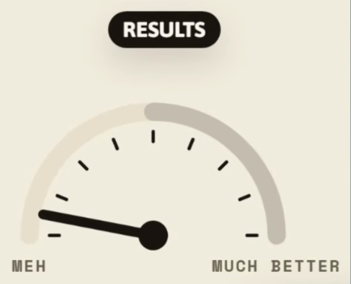
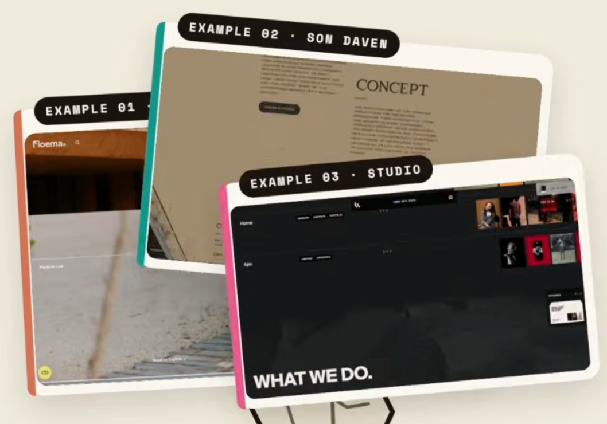
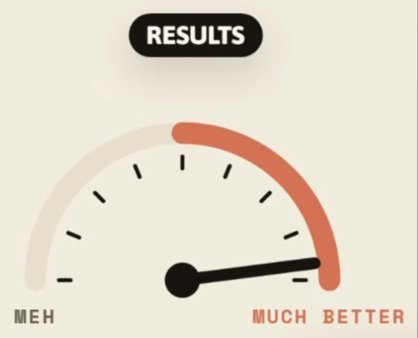
→
스타일을 설명하는 형용사보다 실제 화면을 보여 준다.
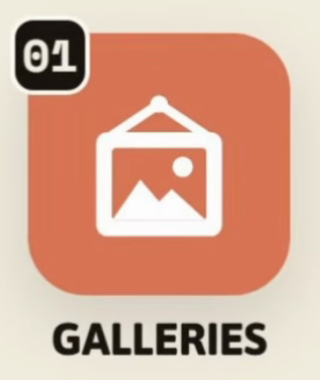
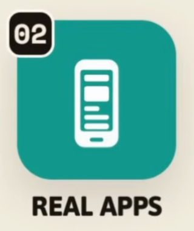
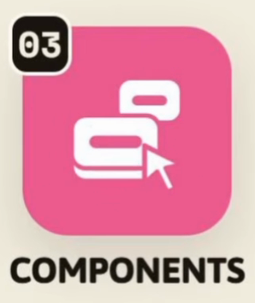
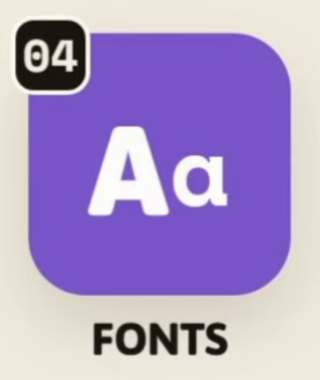
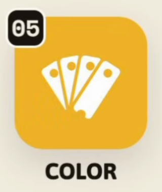
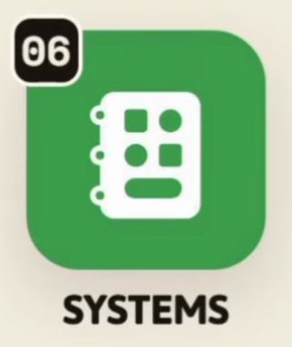
Reference
Component
Font
Color
Design System
화면과 부품, 글꼴, 색, 디자인 규칙으로 취향을 구체화한다.
DISCOVER · 01
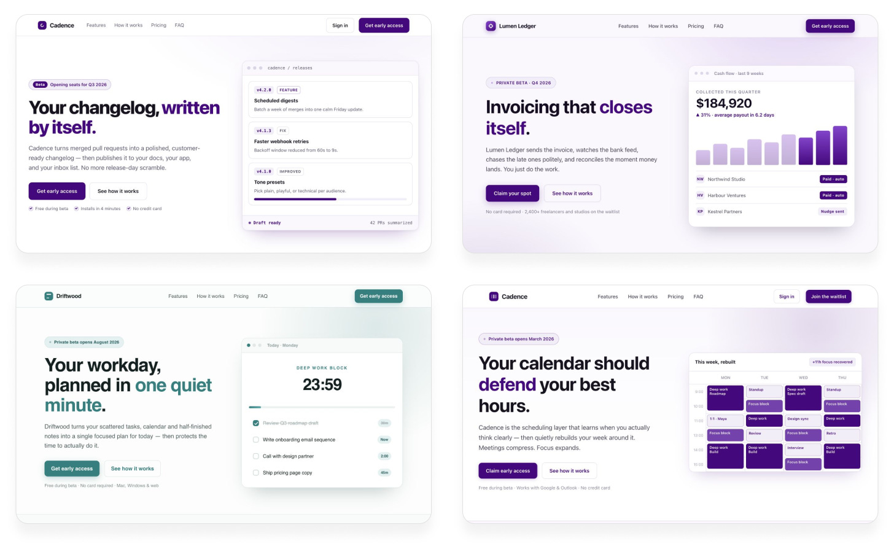
기본 프롬프트
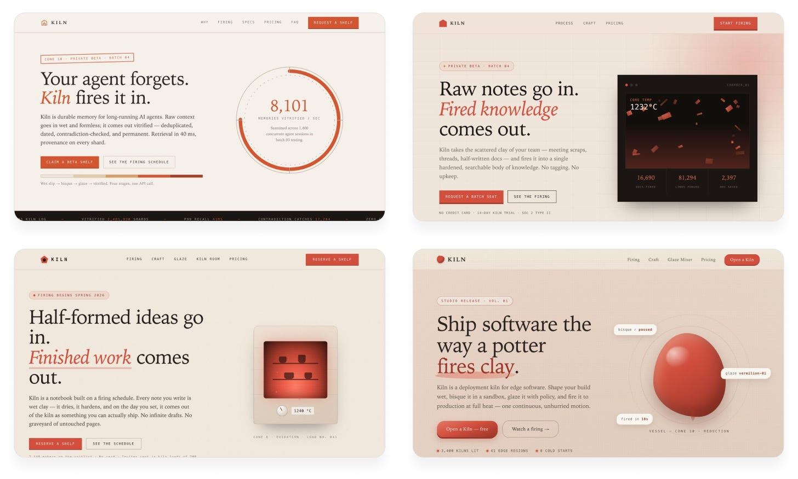
“독특하고 무작위로”
기본 요청도 무작위 요청도 결과끼리 닮았다.
프롬프트 요지
기본 요청: Build me a landing page for my productivity app.
추가 요청: 완전히 독특하게, 모든 결정을 무작위로.
DISCOVER · 01
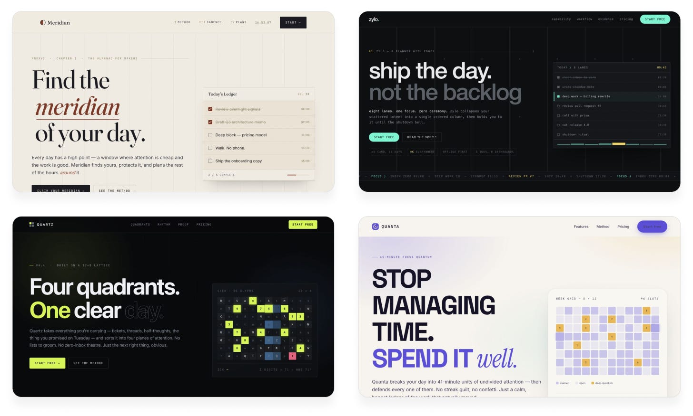
외부 시드가 색·글꼴·구성의 출발점을 바꾼다.
프롬프트 요지
셸 스크립트로 긴 무작위 영숫자 문자열을 만들어 줘.
그 안의 패턴에서 색·레이아웃·글꼴의 영감을 찾아 생산성 앱 랜딩 페이지를 만들어 줘.
문자열 자체는 화면에 드러내지 마.
DISCOVER · 02
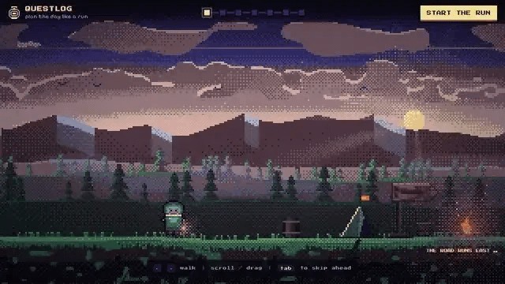
구체적인 영감이 디자인의 방향을 만든다.
프롬프트 요지
생산성 앱 랜딩 페이지를 대담한 픽셀 아트 테마로 만들어 줘.
각 섹션은 게임 속 한 장면처럼 느껴지되, 랜딩 페이지로 작동하게 해.
DISCOVER · 02
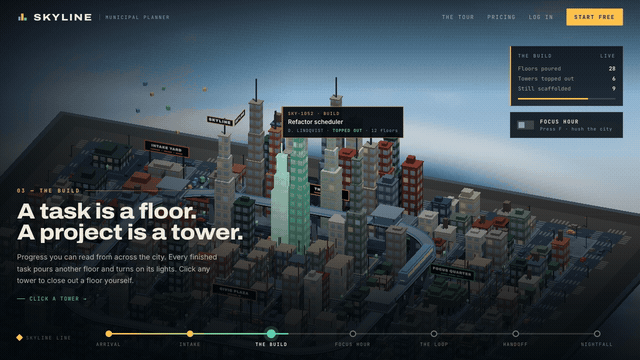
제품의 기능을 도시의 공간으로 표현한다.
프롬프트 요지
아이소메트릭 3D 도시를 배경으로 생산성 앱 랜딩 페이지를 만들어 줘.
각 기능을 동네나 건물로 표현해.
DISCOVER · 02
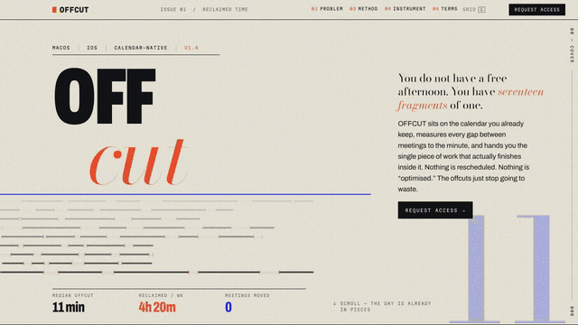
낯선 조합도 구체적으로 요청해 본다.
프롬프트 요지
극단적으로 비대칭인 레이아웃, 불협화음 같은 색과 타이포그래피, 불편한 여백으로 생산성 앱 랜딩 페이지를 만들어 줘.
규칙을 깨되 보기 좋게 만들어.
DISCOVER · 02

AI 답변
처음에는 깊이보다 폭을 넓힌다.
프롬프트 요지
제품을 위한 대담하고 독특한 디자인 언어를 찾고 싶어.
짧은 설명을 붙여 아이디어를 최대한 많이 나열해 줘.
세부 설계보다 방향의 다양성을 우선해.
DISCOVER · 02

AI 답변
원하는 느낌과 피할 느낌을 함께 전한다.
프롬프트 요지
Industrial Control Panel을 내 취향에 맞게 다듬어 줘.
딸깍거리는 버튼·소리, 절제된 디테일, 질감과 약간의 색을 원해.
만화풍·스큐어모픽·밋밋한 회색 그라데이션은 피해.
DISCOVER · 02

AI 답변
취향이 정해지면 실행할 요청으로 묶는다.
프롬프트 요지
지금 정한 Precision Industrial 방향으로 단일 POC 페이지를 만들 간결한 프롬프트를 써 줘.
레트로·만화풍·과한 스큐어모픽은 피한다는 조건도 담아 줘.
DEFINE · 03
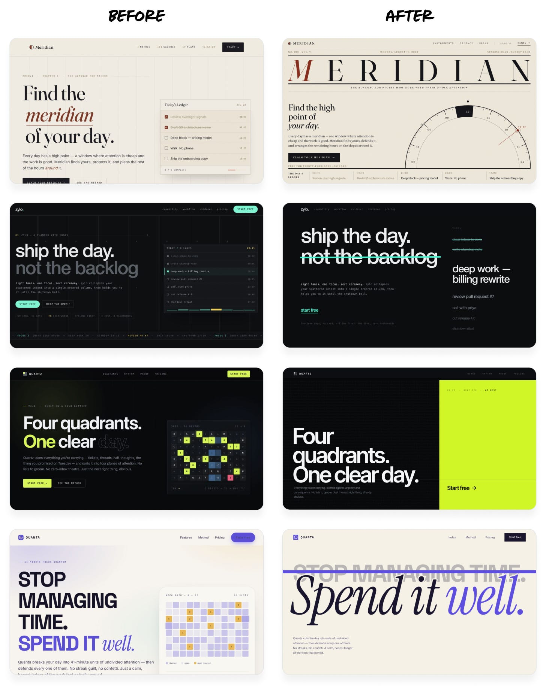
구현자는 만들고, 별도 비평가는 화면만 본다.
프롬프트 요지
매 반복의 스크린샷을 새 컨텍스트의 디자인 비평가에게 넘겨 줘.
코드·이전 반복·이전 비평은 주지 마.
비평가는 최고 수준 스튜디오와의 가장 큰 격차를 짚고 10점 만점으로 채점해.
DEFINE · 03
같은 평가 기준으로 반복해 고유한 개성을 만든다.
프롬프트 요지
비평가에게 매번 같은 프롬프트를 줘.
큰 구조·세부를 보고, 과하거나 AI 티 나는 패턴은 감점하게 해.
독립적으로 9/10 이상을 줄 때 종료하되, 종료 점수는 비평가에게 알리지 마.
DEFINE · 04
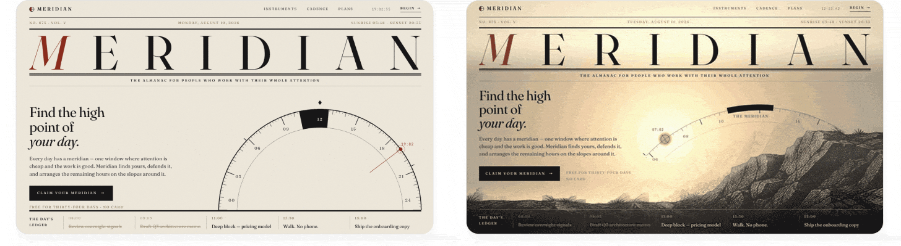
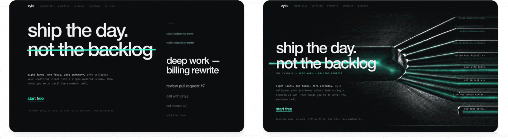
생성 이미지는 디자인에 개성을 더한다.
프롬프트 요지
밋밋한 디자인에 생성 이미지로 개성을 더해 줘.
더 흥미로운 비주얼을 위해 셰이더나 3D 효과와의 조합도 고려해.
DEFINE · 04
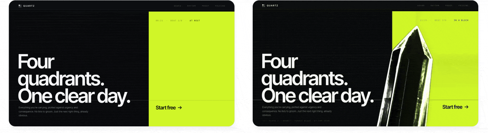
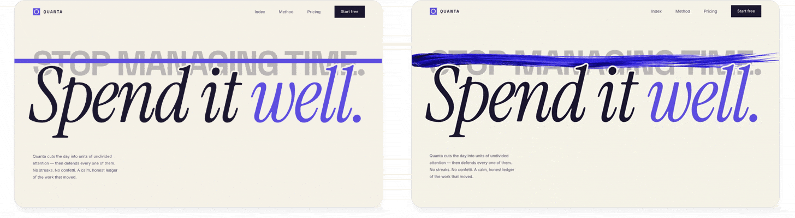
생성 결과는 실제 화면에서 확인한다.
프롬프트 요지
이미지 생성 도구를 사용해 디자인에 개성을 더해 줘.
API 키는 로컬에서만 사용하고, 결과를 브라우저에서 프레임 단위로 확인해.
DEFINE · 05
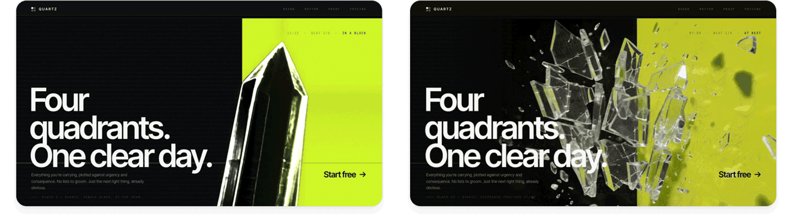
정지 이미지를 풍부한 루프 영상으로 확장한다.
프롬프트 요지
크리스털이 쪼개지며 천천히 회전하고, 배경을 굴절시키며 빛과 그림자를 드리우는 루프 영상을 만들어 줘.
페이지 배경색 위에 렌더링한 뒤 매팅으로 배경을 지워.
적합한 모델은 fal.ai에서 찾아 줘.
DEFINE · 05
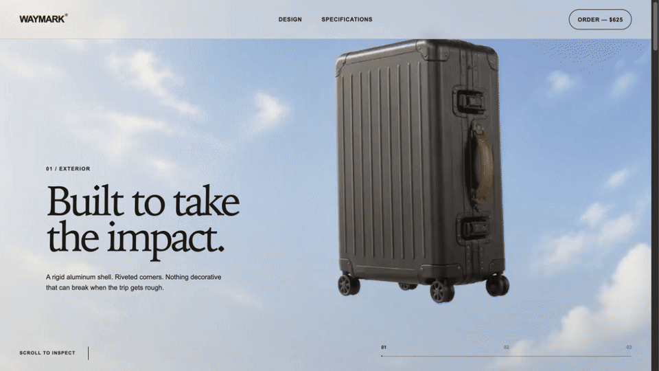
앞 장면의 끝을 다음 장면의 시작으로 쓴다.
프롬프트 요지
뜬 가방 → 내려앉아 열림 → 위에서 짐 담김을 스크롤에 맞는 세로 움직임으로 이어 줘.
첫 프레임은 이미지로 만들고, 각 클립의 마지막 프레임을 다음 시작으로 써.
DELIVER · 06
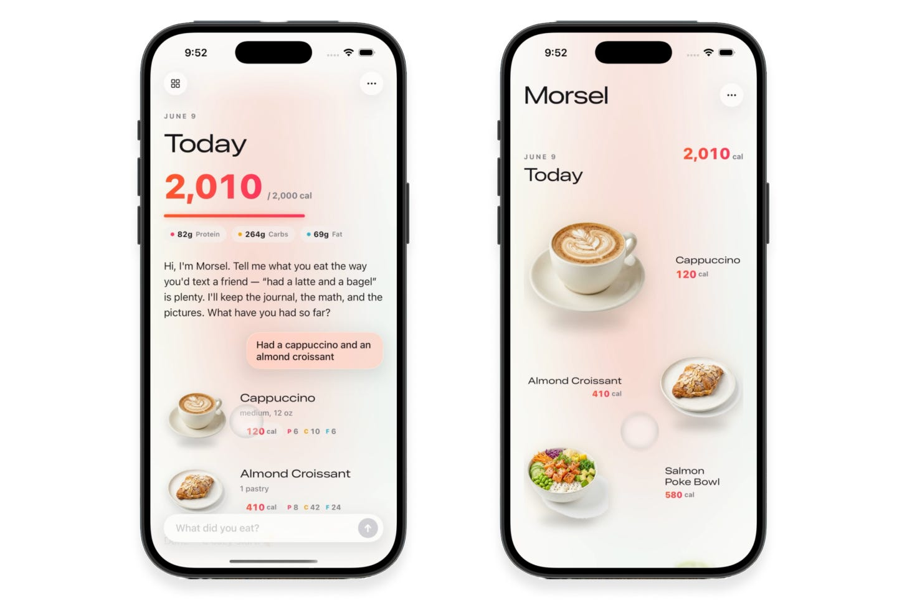
BEFORE
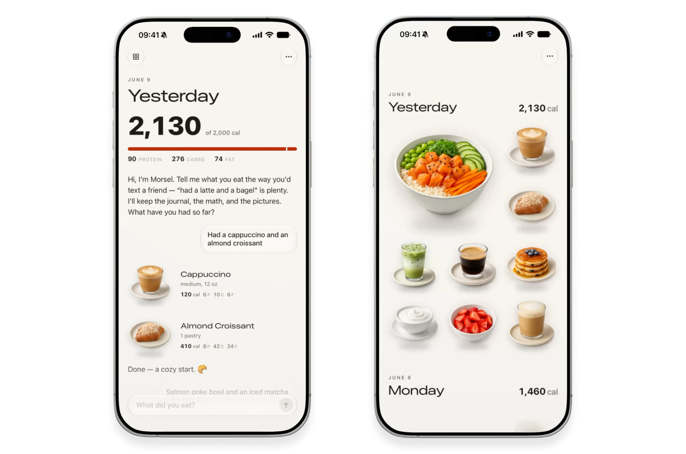
AFTER
필요한 것만 남기면 비주얼이 더 잘 전달된다.
프롬프트 요지
레이아웃을 이미지 중심 그리드로 단순화해 줘.
그라데이션·글로우·불필요한 컨테이너를 없애고, Apple 네이티브처럼 미니멀하게 다듬어 줘.
DELIVER · 07
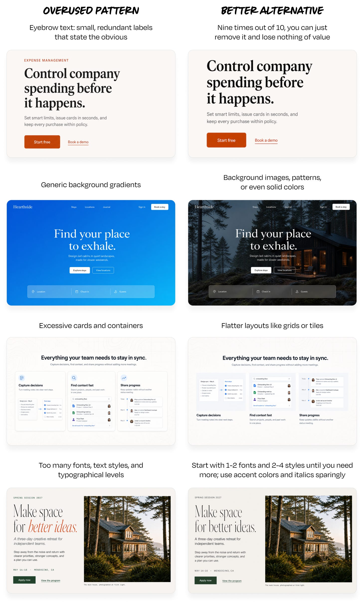
당연한 내용을 반복하는 라벨은 덜어낸다.
다듬기 요청 예시
현재 화면의 작은 라벨을 점검해 줘.
제목이 이미 말하는 내용을 되풀이한다면 지우고, 전후를 비교해 줘.
DELIVER · 07
배경도 목적에 맞춰 고른다.
다듬기 요청 예시
배경 그라데이션을 이미지·패턴·단색으로 바꾼 안을 시도해 줘.
원래 안과 비교해 더 어울리는 쪽을 고르자.
DELIVER · 07
평평한 레이아웃으로 내용에 시선을 모은다.
다듬기 요청 예시
불필요한 카드와 컨테이너를 줄이고, 그리드나 타일처럼 평평한 레이아웃으로 정리해 줘.
원래 안과 비교해 줘.
DELIVER · 07
적은 글꼴과 스타일로 화면을 정리한다.
다듬기 요청 예시
글꼴 1~2개, 스타일 2~4개로 정리해 줘.
강조색과 이탤릭은 꼭 필요한 곳에만 남기고, 정리 전후를 비교해 줘.
DELIVER · 08
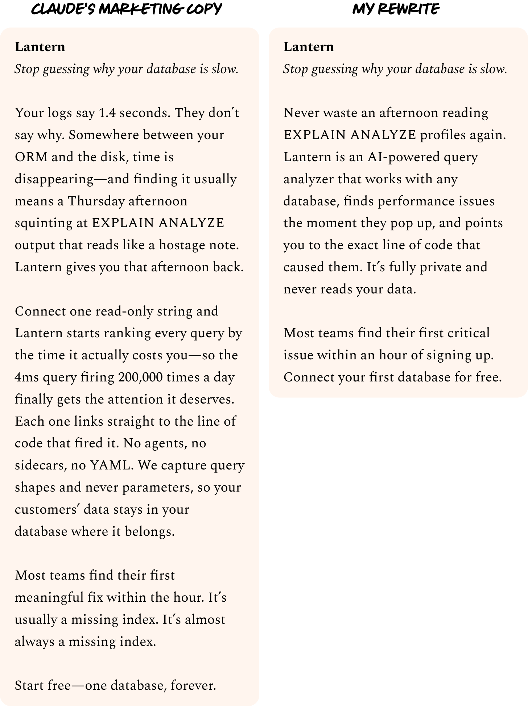
4단락 → 2단락
AI 초안은 사람이 읽고 자기 목소리로 다시 쓴다.
직접 다듬기
AI 초안은 자리표시자로 보고, 내가 모든 줄을 읽고 다시 쓴다.
제품이 무엇이며 무엇을 해 주는지 짧게 말하고, 일관된 목소리로 다듬는다.
03 · CLAUDE CODE
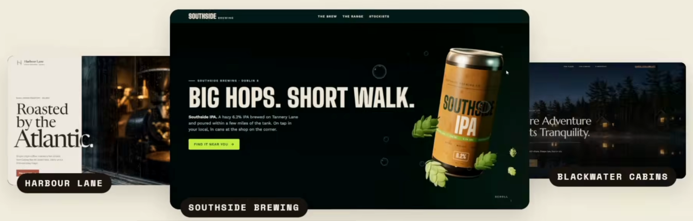
01
찾기
02
전달
03
비교
04
기록
참고 자료와 목표를 한 프롬프트에 담고, 화면을 보며 고친다.
03 · REFERENCE
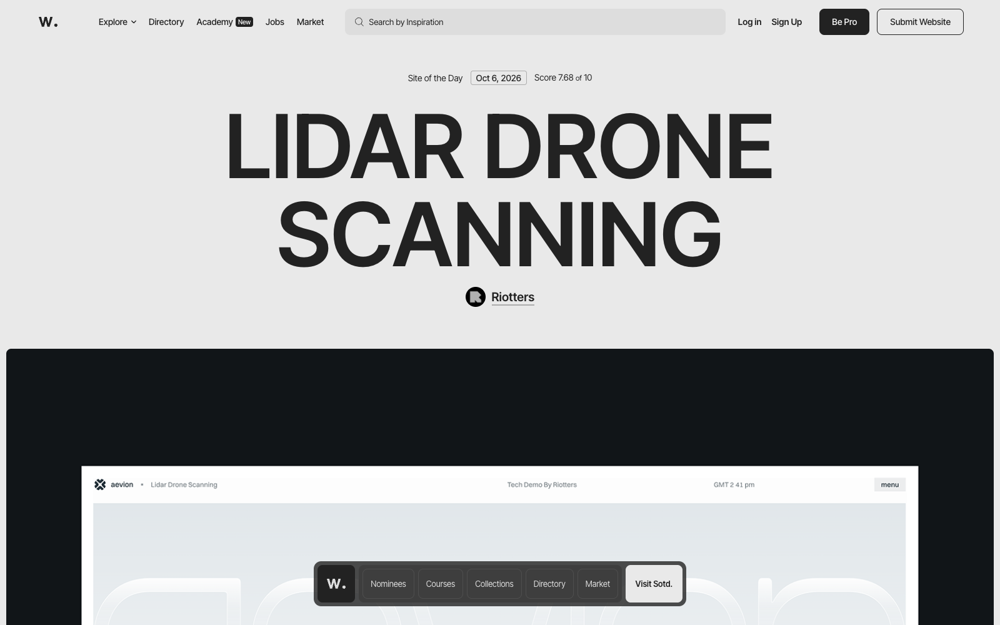
Reference · Awwwards

Component · 21st.dev

Font · Fonts In Use

Color · Coolors
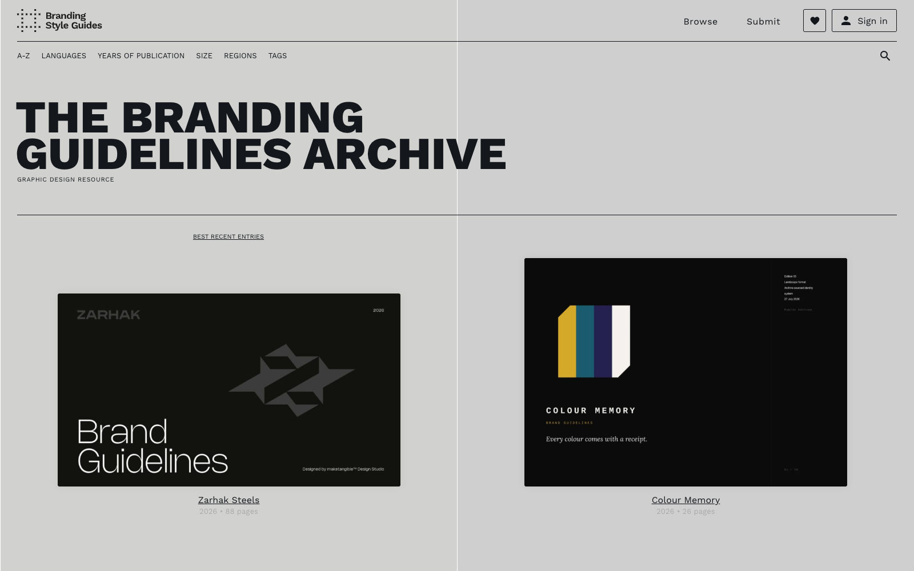
System · Branding Style Guides
화면, 부품, 글꼴, 색, 규칙에 맞는 자료를 따로 찾는다.
03 · CAPTURE
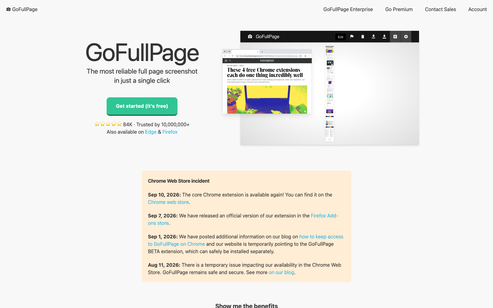
GoFullPage
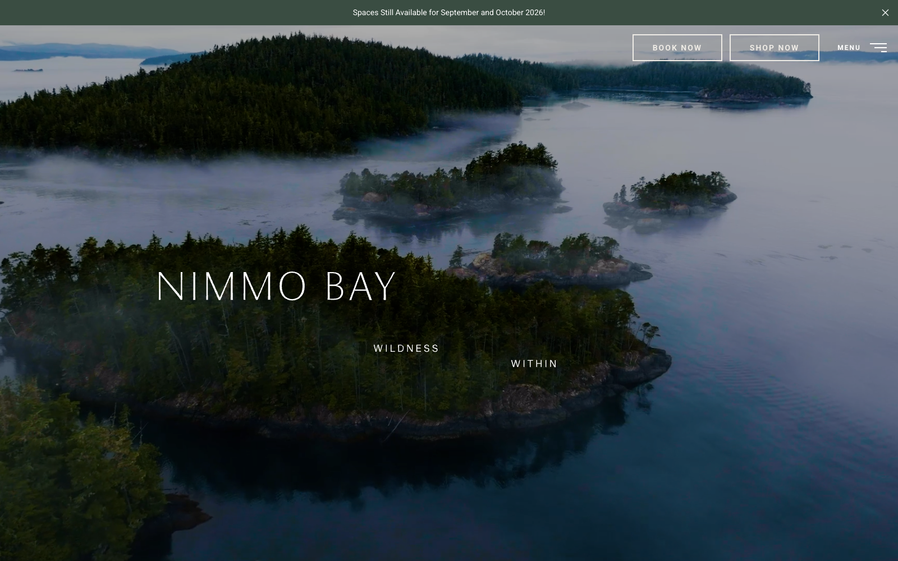
사진 ✓ 색·글꼴 ×
ref/site1.png
→
이미지 경로와 함께 좋아하는 점과 피할 점을 적는다.
03 · PROMPT
참고 화면
→
BRIEF
빈 날짜 확인
어둡고 조용한 호숫가
세리프 · 넓은 여백
화면마다 행동 하나
목표 행동부터 색과 여백, 검증 방법까지 미리 정한다.
03 · SOUTHSIDE BREWING
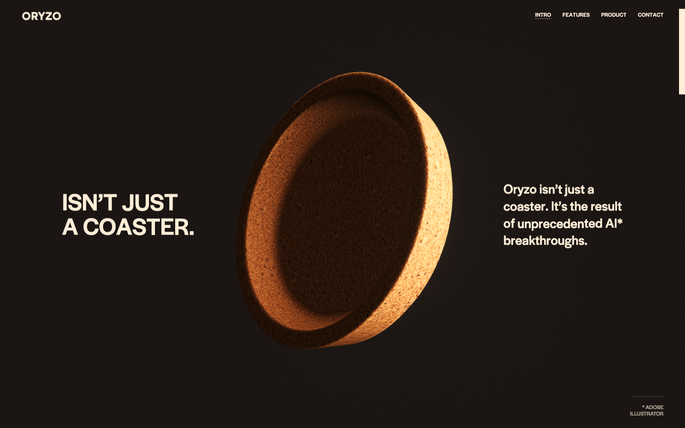
Oryzo
Southside Brewing
→
참고 사이트의 스크롤 효과를 맥주 캔에 맞게 바꾼다.
03 · HARBOUR LANE COFFEE
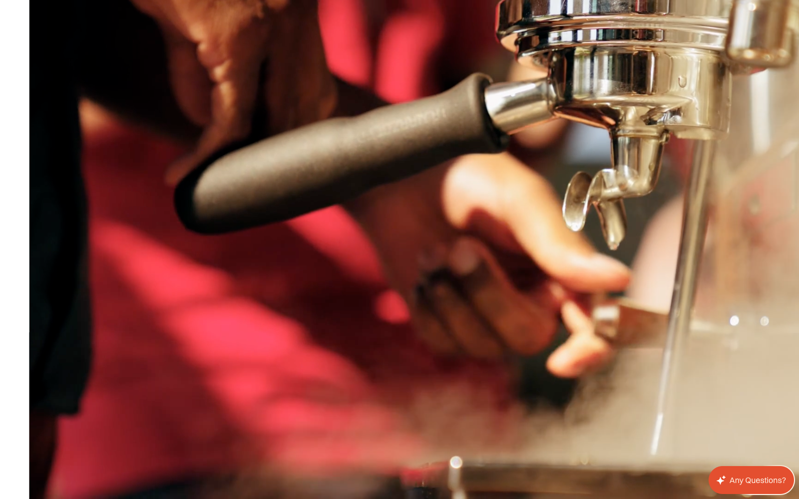
영상 · Café Technica
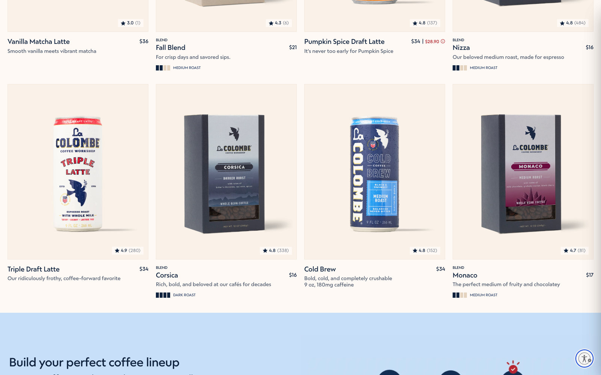
색·카드 · La Colombe
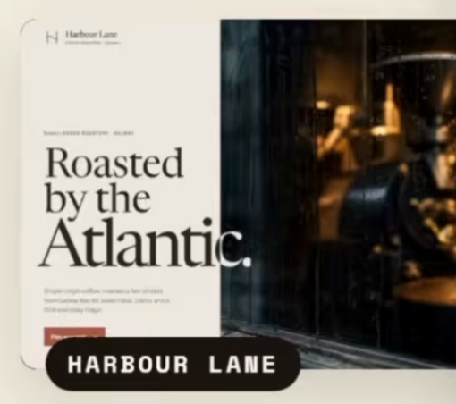
Harbour Lane
→
영상, 색, 카드의 참고 화면을 나눠 커피 브랜드에 적용한다.
03 · BLACKWATER CABINS
사진 · Nimmo Bay

분위기 · Vipp
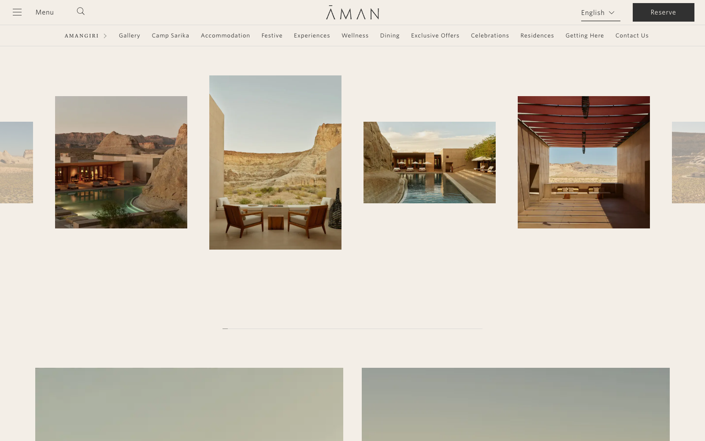
여백 · Amangiri
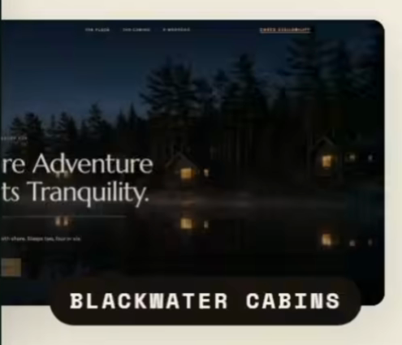
Blackwater Cabins
→
사진과 분위기, 카드의 여백을 각각 골라 숙소 페이지를 만든다.
03 · SETUP
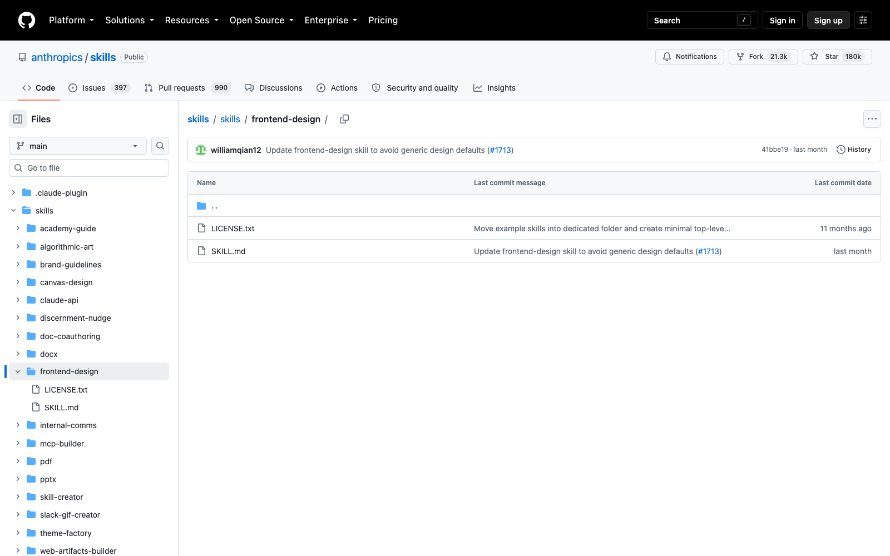
frontend-design
Opus
Playwright
ref/
디자인 스킬과 Opus, 화면을 확인할 브라우저를 준비한다.
03 · VERIFY
참고 화면
결과 화면
↔
제작
→
캡처
→
평가
→
수정
1440 px / 390 px
제작자와 평가자를 나누고, 실제 화면에서 가장 큰 차이를 고친다.
03 · DESIGN SYSTEM
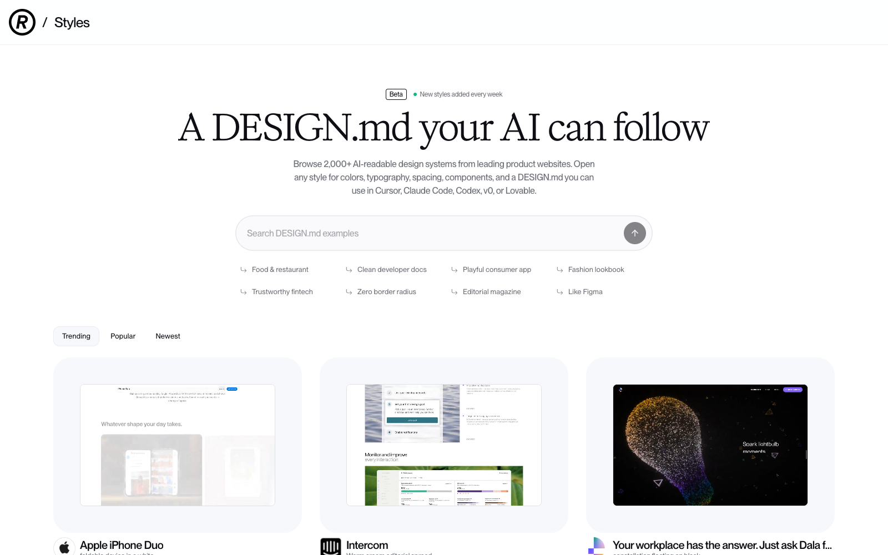
Refero Styles
DESIGN.md
가나다 Aa
색 · 글꼴 · 간격 · 부품
확정한 색과 글꼴, 간격을 문서로 남겨 다음 작업에 재사용한다.